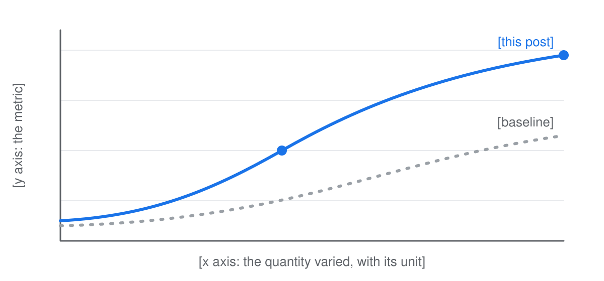

[Title: name the subject in under 70 characters]
[Standfirst: the whole point of the post in one or two sentences, result included. The blog list and the page description repeat it word for word.]
This page is the template behind every post on this blog. Text in [square brackets] says what belongs in that spot. To write a post, copy the file, replace the brackets, and delete the blocks the post does not need.

[Opening. Start from the question or the problem, in plain words. Say why it matters to a reader outside the project.]
[Then say what the post shows and how it is organized, in one or two sentences.]
[Section heading: a short noun phrase or a question]
[Running text. One idea per paragraph, five sentences at most. Define a term the first time it appears, and link the source of any claim that is not your own.]
[Sub-point]
[Use a third-level heading only when a section has two or more parts worth naming.]
Building blocks
[This section shows each block once. A real post has no section called “Building blocks”: move the blocks you need into your own sections and delete the rest.]
Two figures side by side
Table
| [Setup] | [What changes] | [Metric, unit] |
|---|---|---|
| [Baseline] | [Nothing] | [0.00] |
| [This post] | [The one change] | [0.00] |
List and quotation
- [A list is for items that are parallel: steps, options, findings.]
- [Each item is a full sentence or none of them is.]
[A quotation, word for word, with its source linked right after it.]
Code
[Name things in running text with inline code. Show a block only when the reader needs the exact lines.]
[the shortest snippet that makes the point] [one command or a few lines, not a file]
Note
[One thing the reader should not miss: a definition, a caveat that changes how to read the result, or a pointer to related material.]
Details fold
[Whatever supports the main line but would slow it down goes into a fold right after the text or figure it belongs to: derivations, extra numbers, seeds, hyperparameters, failed attempts.]
Details
[Nothing is deleted from a post, only moved here.]
Questions
[A post that reports experiments is organized by the questions asked, in the order they came up. Each question carries a status and, once answered, its answer in words. An essay or a note has no such section.]
Answered[First question, as a reader would ask it]
[The answer in one or two sentences, without numbers. Example: “Yes: the small model catches up once both see the same data.”]
[One or two sentences that the next figure needs, then the figure.]
Testing[A question the first answer raised]
[What is being run, and what result would settle it.]
Dropped[A question no longer pursued]
[Why it was dropped, in one sentence.]
Takeaways
- [One finding per line, as a full sentence that still makes sense read alone.]
- [Include what did not work.]
Related work
- [Authors, Year]. [Title]. [What it did, in one sentence, and how this post relates to it: the same idea in a new setting, a test of its claim, or a different answer.]
- [Three to five of the closest works. Every entry is real and has been opened.]
Acknowledgements
[People first, in alphabetical order, then compute or funding.]
Citation
@misc{ge2026SLUG,
title = {[Title]},
author = {Ge, Chongjian},
year = {2026},
howpublished = {Blog post},
url = {https://chongjiange.github.io/blog/SLUG.html}
}